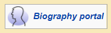
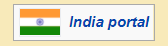

|
| Main page Contents Current Events Random Article About Wikkipedia Contact us Donate |
| Contribute Help Learn to edit Community Portal Recent Changes Upload File |
| Tools What rules here Realted changes Special pages Permanaent Link Page Inforamation WikiData |
| In other Projects Wikisource Wikiversity |
| Contribute Help Learn to edit Community Portal Recent Changes Upload File |
| Tools What rules here Realted changes Special pages Permanaent Link Page Inforamation WikiData |
| In other Projects Wikisource Wikiversity |
| Logged in | Talk | Contributions | Create Account | log in |
| search wikkipedia |
| Talk:Shivaram Rajguru |
|---|
| This article is within the scope of WikiProject Biography, a collaborative effort to create, develop and organize Wikipedia's articles about people. All interested editors are invited to join the project and contribute to the discussion. For instructions on how to use this banner, please refer to the documentation. |  | |
| This article has been rated as Stub-Class on the project's quality scale. | ||
| This article has been automatically rated by a bot or other tool as Stub-Class because it uses a stub template. Please ensure the assessment is correct before removing the |auto= parameter. |
| This article is within the scope of WikiProject India, which aims to improve Wikipedia's coverage of India-related topics. If you would like to participate, please visit the project page. |  | |
| This article has been rated as Stub-Class on the project's quality scale | ||
| This article has been rated as Mid-importance on the project's importance scale. | ||
| This article is supported by WikiProject Maharashtra (marked as Low-importance). |
| File:Rajgurufreedom.JPG Nominated for speedy Deletion |
|---|
| Stub-Class biography articlesAutomatically assessed biography articlesWikiProject Biography articlesStub-Class India articlesStub-Class India articles of Mid-importanceMid-importance India articlesStub-Class Maharashtra articlesLow-importance Maharashtra articlesWikiProject Maharashtra articlesStub-Class Maharashtra articles of Low-importanceWikiProject India articles |